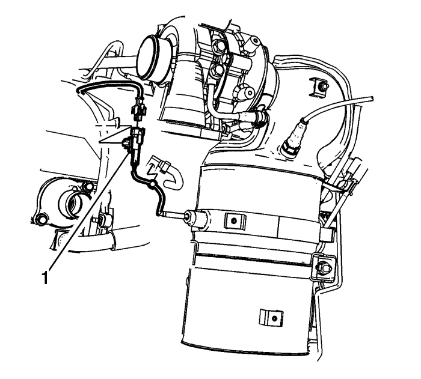
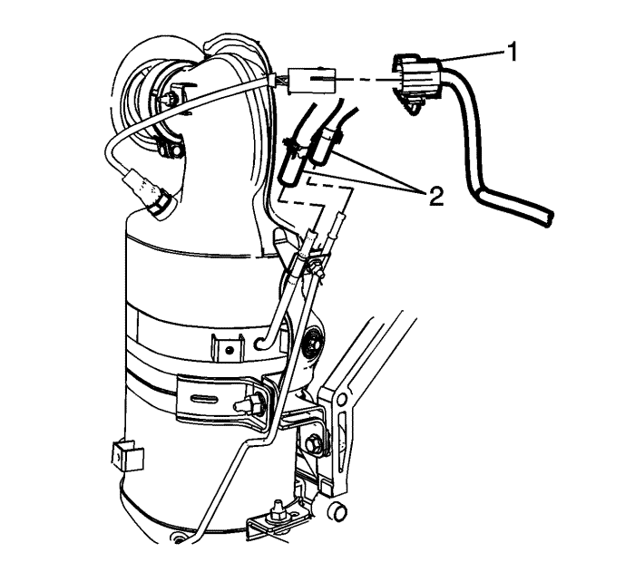
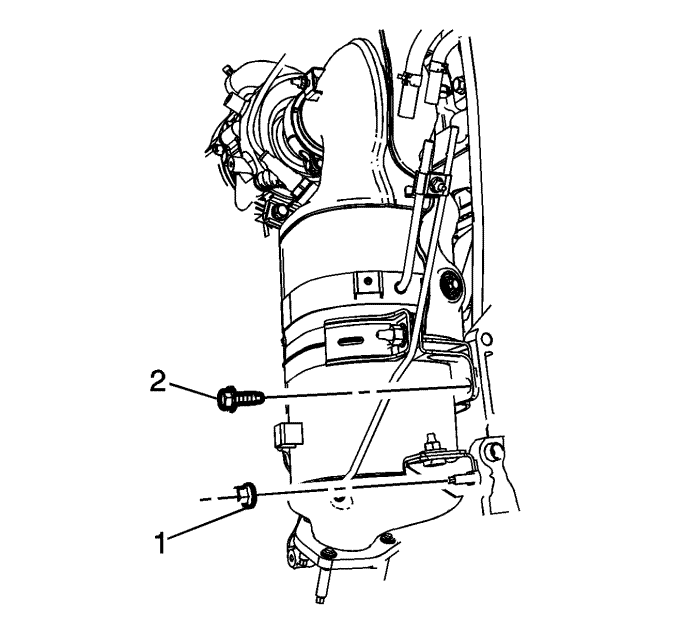

Sustitución del filtro de partículas del escape — LNQ
Procedimiento de desmontaje
Advertencia: Consulte Advertencia sobre sistema de escape caliente en la sección Prólogo
- Desmonte el tubo flexible del compresor de aire acondicionado. Consultar Sustitución del tubo flexible del compresor de aire acondicionado : Diesel → L4 → V6 .
- Desmonte el tubo flexible de salida del EVAP. Consultar Sustitución del tubo flexible de salida del evaporador : V6 → Diesel → L4 .
- Extraiga la pantalla térmica del turbocompresor. Consultar Sustitución de la pantalla térmica del turbocompresor : LNQ .
- Desmonte la pantalla térmica delantera del filtro de partículas Diesel. Consultar Sustitución de la pantalla térmica del filtro de partículas de escape - Parte delantera : LNQ .
- Desmonte el tubo de escape delantero. Consultar Sustitución del tubo delantero : LNQ → LF1 → LE5 .

- Desmonte el sensor de temperatura del escape (1).

- Desmonte los sensores de presión del diferencial (2).

- Extraiga el tornillo (2) y la tuerca (1) del soporte del filtro de partículas Diesel.

- Extraiga los tornillos de soporte del escape (1) y afloje la tuerca que sujeta la abrazadera de partículas Diesel al turbocompresor (2).
- Desmonte el filtro de partículas diesel (2) y deseche la junta (1).
Procedimiento de montaje
- Monte una junta NUEVA (1) en el turbocompresor y deslice el filtro de partículas diesel (2) hasta introducirlo en el turbocompresor.
Precaución: Consulte Precaución con las fijaciones en la sección Prólogo
- Apriete la abrazadera (2) a 9 N·m (80 lb in).
- Coloque el filtro de partículas diesel al bloque del motor y ajuste los tornillos (1) a 22 N·m (16 lb ft).
- Coloque el tornillo de soporte del filtro de partículas diesel (2) y apriételo a 22 N·m (16 lb pie).
- Coloque la tuerca de soporte del filtro de partículas diesel (1) y apriételo a 28 N·m (21 lb pie).
- Conecte los sensores de presión del diferencial de escape (2).
- Conecte el sensor de temperatura del escape (1).
- Monte la pantalla térmica delantera del filtro de partículas diesel. Consultar Sustitución de la pantalla térmica del filtro de partículas de escape - Parte delantera : LNQ .
- Monte el tubo de escape delantero. Consultar Sustitución del tubo delantero : LNQ → LF1 → LE5 .
- Monte la pantalla térmica del turbocompresor. Consultar Sustitución de la pantalla térmica del turbocompresor : LNQ .
- Monte el tubo flexible del compresor de aire acondicionado. Consultar Sustitución del tubo flexible del compresor de aire acondicionado : Diesel → L4 → V6 .
- Monte el tubo flexible de salida del EVAP. Consultar Sustitución del tubo flexible de salida del evaporador : V6 → Diesel → L4 .
| © Copyright Chevrolet Europe. All rights reserved |